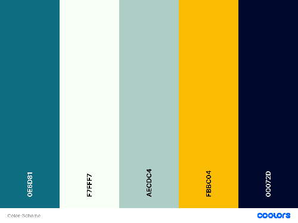

Color Palette:

Examples:
Header & Footer: #00072D
Body: #0E6D81
Navigation: main → #AECDC4 hover → #FBBC04
Text: on dark background → #F7FFF7, on light background → #00072D
Header & Footer: #00072D
Body: #0E6D81
Navigation: main → #AECDC4 hover → #FBBC04
Text: on dark background → #F7FFF7, on light background → #00072D